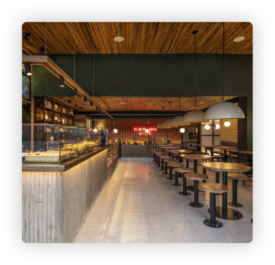
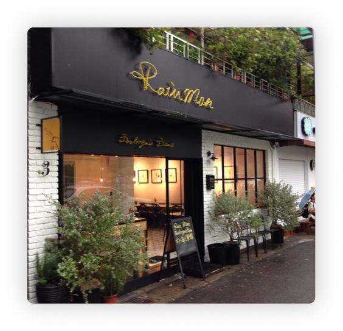

Our History
Coffee is a brewed drink prepared from roasted coffee beans, the seeds of berries from certain flowering plants in the Coffea genus. From the coffee fruit, the seeds are separated to produce a stable, raw product: unroasted green coffee.

Our Vision

Coffee is a brewed drink prepared from roasted coffee beans, the seeds of berries from certain flowering plants in the Coffea genus. From the coffee fruit, the seeds are separated to produce a stable, raw product: unroasted green coffee.
Our Mission
Coffee is a brewed drink prepared from roasted coffee beans, the seeds of berries from certain flowering plants in the Coffea genus. From the coffee fruit, the seeds are separated to produce a stable, raw product: unroasted green coffee.
